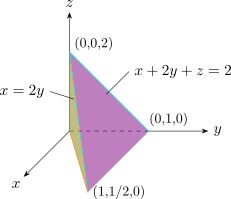
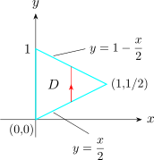
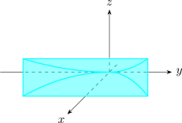
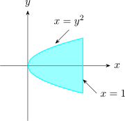

3.11 Applications Of Triple Integrals
Each kind of integral computes a size one dimension up from its region: for \(f\geq 0\), \(\int ^b_a f(x)\,dx\) is the area under a curve, \(\iint _D f(x,y)\,dA\) the volume under a surface, and \(\iiint _E f(x,y,z)\,dV\) a hypervolume in four dimensions, which has no direct picture. The useful interpretations of a triple integral come instead from taking particular integrands. With \(f = 1\) it is the volume of \(E\): \[V(E) = \iiint \limits _E dV .\]
Example 3.11.1. Use a triple integral to find the volume of the tetrahedron \(T\) bounded by the planes \(x + 2y + z = 2\), \(x = 2y\), \(x = 0\) and \(z = 0\).


Solution. As in Example 3.3.5, the base is the triangle \(\frac {x}{2}\leq y\leq 1 - \frac {x}{2}\), \(0\leq x\leq 1\), and the solid lies between \(z = 0\) and \(z = 2 - x - 2y\): \[T =\left \{ (x,y,z) \mid 0 \leq x \leq 1,\ \frac {x}{2}\leq y \leq 1 - \frac {x}{2},\ 0 \leq z \leq 2 - x - 2y\right \} ,\] so \[V(T) = \int ^1_0\int ^{1-x/2}_{x/2} \int _0^{2-x-2y} dz\,dy\,dx = \int ^1_0\int ^{1- x/2}_{x/2}(2 - x - 2y)\,dy\,dx = \frac {1}{3} .\] The innermost integration simply turns the triple integral into the double integral for the volume found earlier.
Mass, Moments and Centre of Mass
If \(\rho (x,y,z)\) is the density of a solid occupying \(E\), its mass is \[m = \iiint \limits _E \rho (x,y,z)\,dV ,\] its moments about the three coordinate planes are \[M_{yz} = \iiint \limits _E x\, \rho (x,y,z)\,dV ,\qquad M_{xz} = \iiint \limits _E y\, \rho (x,y,z)\,dV ,\qquad M_{xy} = \iiint \limits _E z\, \rho (x,y,z)\,dV ,\] and its centre of mass is \((\bar x,\bar y,\bar z)\), with \[\bar x = \frac {M_{yz}}{m} ,\qquad \bar y = \frac {M_{xz}}{m} ,\qquad \bar z = \frac {M_{xy}}{m} .\]
Example 3.11.2. Find the centre of mass of a solid of constant density \(\rho \) that is bounded by the parabolic cylinder \(x = y^2\) and the planes \(z = 0\), \(x = z\) and \(x = 1\).
|  |  |
Solution. The solid lies above the region \(D\) of the \(xy\)-plane between \(x = y^2\) and \(x = 1\), and below the plane \(z = x\): \[E = \{(x,y,z) \mid -1\leq y\leq 1,\ y^2 \leq x \leq 1,\ 0 \leq z \leq x\} .\] Then \begin {align*} m & = \int ^1_{-1}\int ^1_{y^2}\int ^x_0\rho \, dz\,dx\,dy = \rho \int _{-1}^1 \frac {1 - y^4}{2}\,dy = \frac {4\rho }{5},\\ M_{yz} & = \int ^1_{-1}\int ^1_{y^2}\int ^x_0 x\,\rho \, dz\, dx\, dy = \rho \int _{-1}^1\frac {1 - y^6}{3}\,dy = \frac {4\rho }{7},\\ M_{xy} & = \int ^1_{-1}\int ^1_{y^2}\int ^x_0z \,\rho \, dz\,dx\,dy = \rho \int _{-1}^1\frac {1 - y^6}{6}\,dy = \frac {2\rho }{7} . \end {align*}
The solid and the density are symmetric about the plane \(y = 0\), so \(M_{xz} = 0\) and \(\bar y = 0\). The centre of mass is \[(\bar x,\bar y, \bar z) = \left (\frac {4/7}{4/5}, 0, \frac {2/7}{4/5}\right ) = \left (\frac {5}{7}, 0, \frac {5}{14}\right ) .\]
Solution. By symmetry \(\bar x = \bar y = 0\). The volume is \(\frac 23\pi a^3\), and in spherical coordinates \[M_{xy} = \int _0^{\pi /2}\int _0^{2\pi }\int _0^a\rho \cos \phi \,\rho ^2\sin \phi \, d\rho \,d\theta \,d\phi = \frac {a^4}{4}\cdot 2\pi \cdot \frac 12 = \frac {\pi a^4}{4},\] so \(\bar z = \frac {\pi a^4/4}{2\pi a^3/3} = \frac {3a}{8}\).
Questions on this section
Stuck on something here? Ask below and it stays attached to this topic.